Tracking changes in tables. How we filled gaps left by competitors and shipped the MVP on time
I designed the first version of table change tracking for MyOffice Text, a desktop word processor.
0→1 · Desktop editor · B2B · B2C · B2G · Product Design · UX

MyOffice desktop document editors
MyOffice develops office software, including cloud storage, desktop document editors and email systems.
- 12+ years on the market
- 12,500+ customers across industries use MyOffice software
- 4,500+ partners across all regions of Russia
- 1,000+ employees
I designed change tracking for tables in the desktop word processor. My work ranged from defining the problem and testing user expectations to designing interface states and writing the specification.
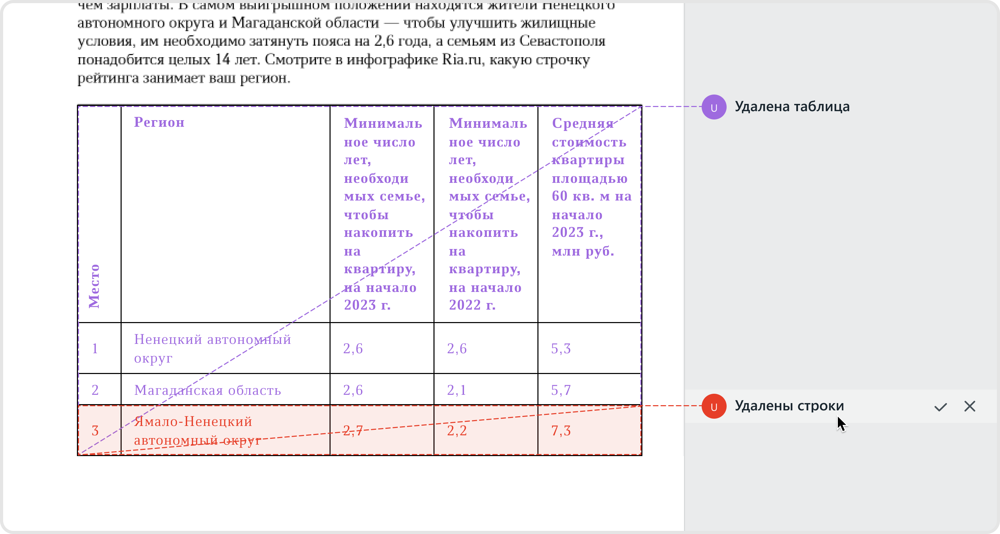
Who uses tables and where reviews break down
Who does what
The document author reviews each change and decides whether to accept or reject it.
Co-authors, approvers and reviewers suggest changes.
How people review tables together
Co-authors and approvers suggest edits. The document author accepts or rejects them. People can work on a document offline, online or together in real time.
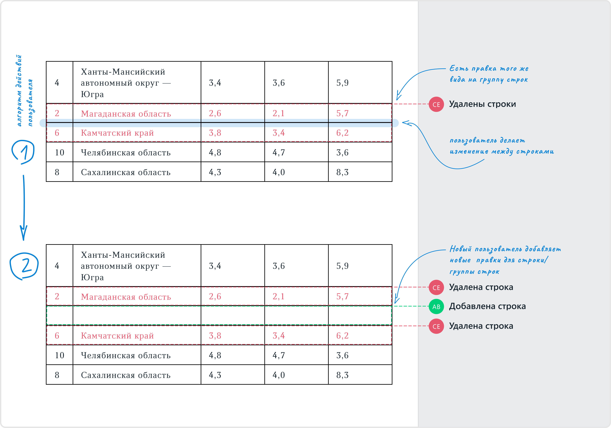
Where the workflow broke down
The editor tracked text edits, but it missed some changes to table structure and formatting.
It automatically accepted some changes from other editors and lost others.
People had to compare document versions by hand.

Design goal
Let people suggest and review changes to tables and pick up a review started in another editor without losing anyone’s edits.
My role and the team
I analyzed workflows and competing editors, ran hallway studies, designed the interface and helped define the requirements.
I worked with the business and systems analysts, product manager, developers and testers to agree on how the feature should behave, what was technically feasible and what each release would include.
Design process
How six editors handled table changes

I compared Microsoft Word, Word for the web, WPS Office, LibreOffice, Google Docs and R7 Office. I tested operations on whole tables, rows and columns, as well as formatting and edits to cell contents.
Finding. Each editor handled table changes differently. Some actions went untracked, others triggered a warning, and a change to the table structure could appear separately from a change to its contents.
We needed to define rules that fit the interaction patterns people already knew from MyOffice.
Defining the rules for tracked changes
I mapped table operations and properties, selection ranges and combinations of edits by multiple co-authors. I built two matrices. One covered what happens as people make changes in sequence. The other covered what happens as they accept or reject related changes.
For each new edit, I considered who made it, what kind of edit it was and where it fell relative to an existing change. It could sit inside that change, next to it or partly overlap it. Those conditions determined whether the edits would merge, stay separate or split into several changes.

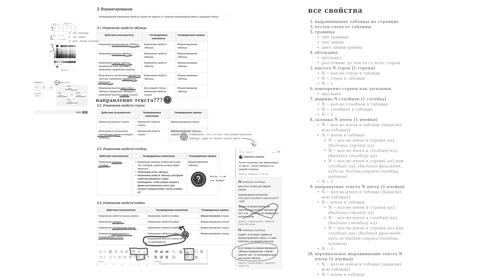


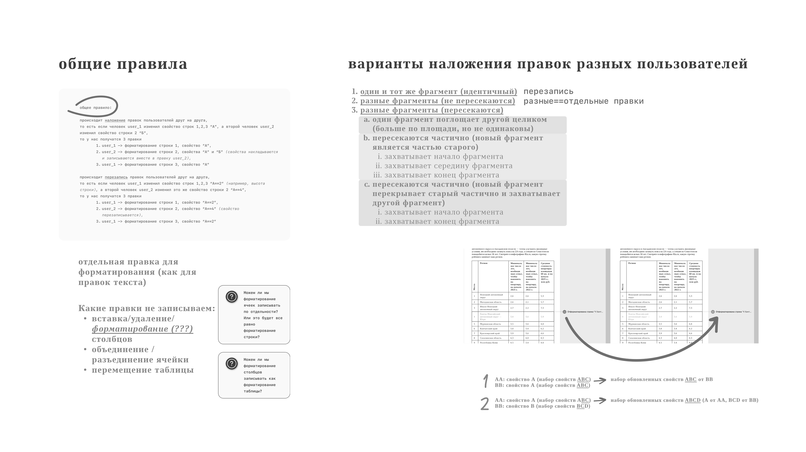
Across several drafts, I explored the available properties, which parts of a table people could edit alone or together, and when edits from different people would overlap or merge.
Finding. Accepting a table deletion also affects the edits inside it. We had to define what would happen to those edits whenever someone acted on the change to the table as a whole.
Our requirements distinguished between the changes the editor records in the document and the changes it shows to the person reviewing it.
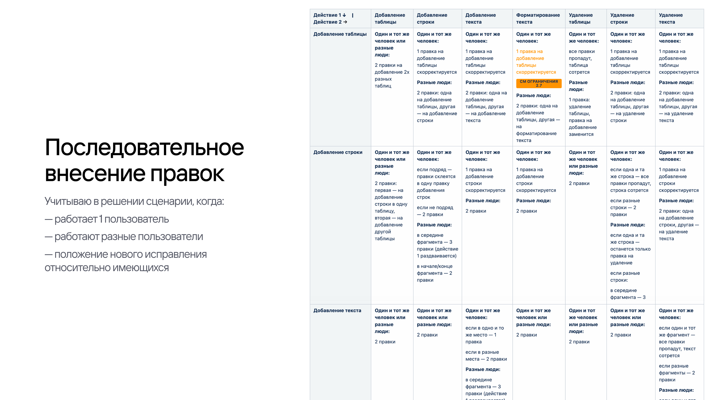
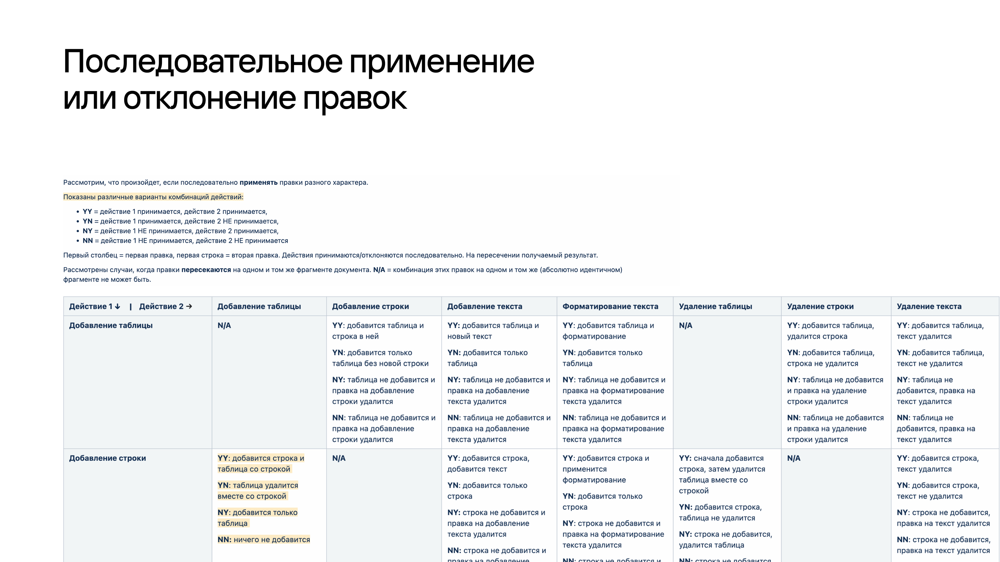
Testing user expectations
I ran a hallway study with 10 people familiar with document review. I wanted to know what they expected to see when they copied part of a proposed insertion or deletion into a clean document.
The task
You have two documents. You’re copying from one and pasting into the other. Each passage contains a change suggested by someone else. What do you think will appear when you paste it into the new document? What would you expect to see?
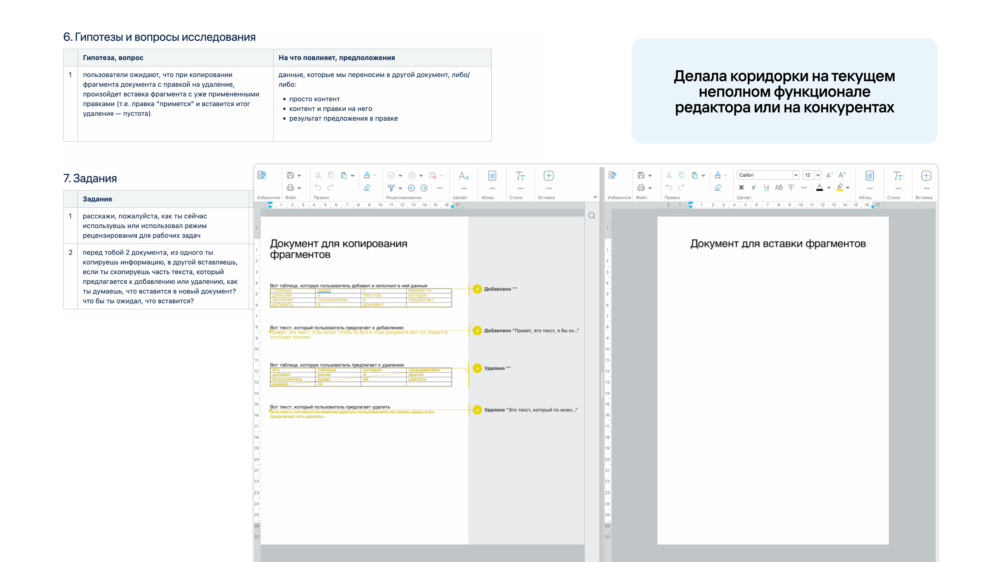
Participants looked at both documents and explained what they thought would appear when they pasted the selection. Possibilities included the content alone, the content with its tracked changes, or the result of accepting the change.
In participants’ words
“I’d expect everything I can see to come across, both the content and the suggested edits.”
“I don’t see why I’d copy just part of someone else’s edit. I’d want the whole change. What would I do with just a piece of it?”
“Whatever I selected.”
“With the comment.”
“Just regular text, without the edits.”
“I’d expect a choice. Paste just the text or include the changes.”
“Whatever I copied is what gets pasted.”
What we learned
When participants copied text marked for deletion, everyone expected something to appear when they pasted it. Accepting the deletion would have left them with nothing to paste.
Some expected to paste the text they could see. Others expected the suggested changes to come with it.
People had no settled expectations about how changes to a table’s structure should work.
They tried an action and judged the result afterward.
When copying part of a document into another, people expected the visible content to carry over.
Whether to carry over the suggested changes as well may depend on the task.
Designing the review interface
I defined requirements for changes to table and row properties and formatting, operations on whole tables, rows and columns, edits to cell contents, and grouped changes.

I designed the markers for insertions, deletions and formatting changes, the hover and selected states, and the messages showing who made each change and when.
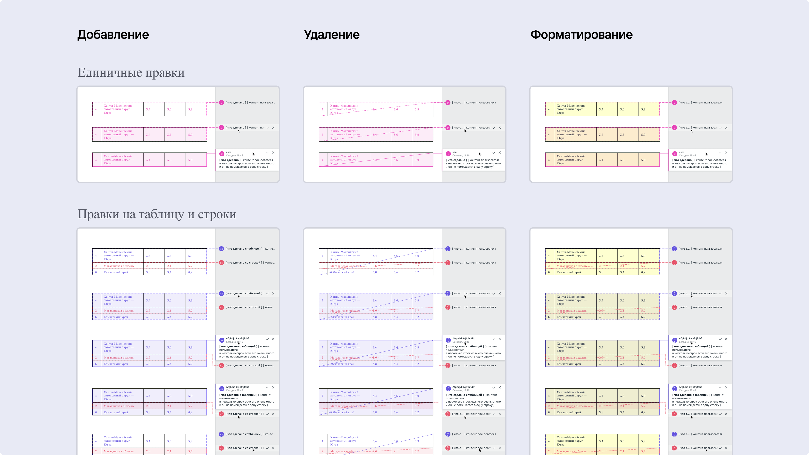
I specified the order in the list of changes. Changes to the table appear before changes to its rows, and row changes appear before edits to the content within them.

When a change spans multiple pages, its message appears once, on the page where the change begins.

I designed a warning for actions the editor couldn’t track and a confirmation prompt for actions that would discard related edits.
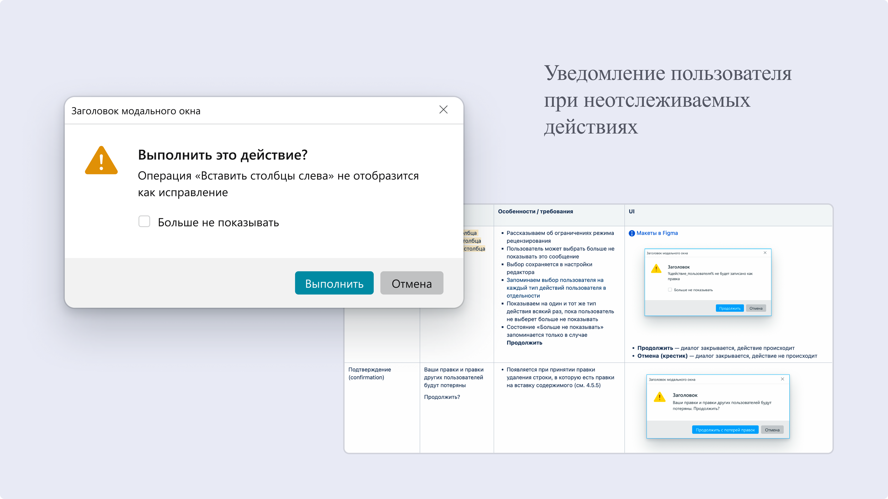
Release scope and next steps
The first release supported four structural changes. Users could insert or delete a table and insert or delete a row. We then worked on grouping changes, tracking table property changes and explaining limitations in the interface.
For later releases, we identified nested tables, merging and splitting cells, clearer messages about edits to objects, and co-author colors that would be easier to tell apart.
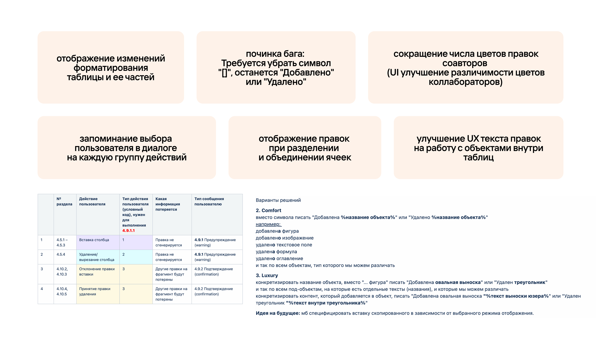
Show formatting changes to a whole table or part of it.
Remove the stray brackets “[]” so the label reads simply “Added” or “Deleted.”
Use fewer colors for co-authors’ changes so the colors are easier to tell apart.
Remember the user’s choice in the dialog for each group of actions.
Show tracked changes when users split or merge cells.
Clarify the wording of changes involving objects inside tables.
What I’d do differently
- I’d test with a larger group to see whether people understand the change markers and what will happen when they accept or reject an edit.
- I’d bring developers in earlier to look at complex combinations of edits, assess technical constraints and decide which scenarios to prioritize.
Outcome
I took the feature from the initial problem analysis through to release in version 3.4.
People can now track changes to tables in MyOffice Text.
I designed the interface states and worked with the analysts on the rules for displaying, accepting and rejecting changes.

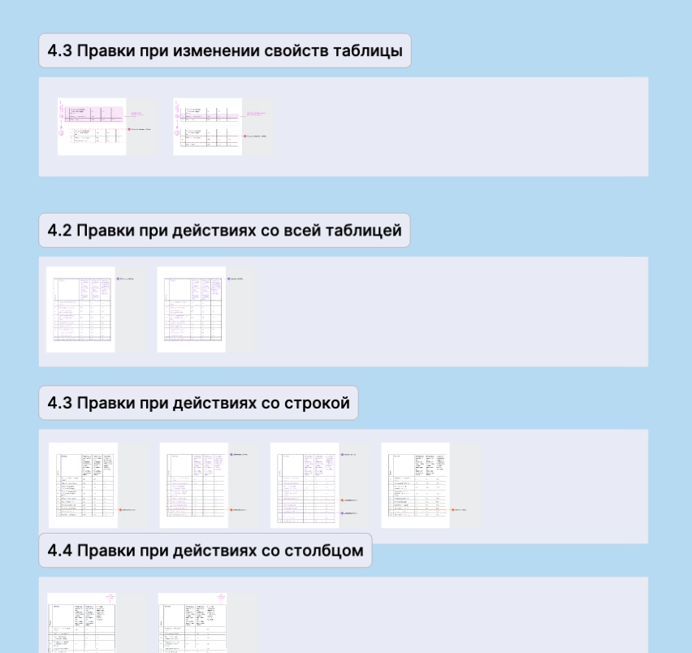

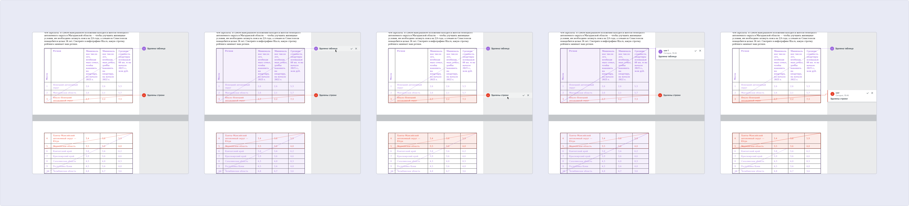
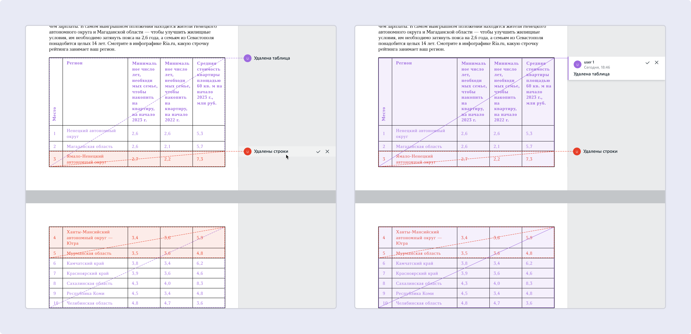